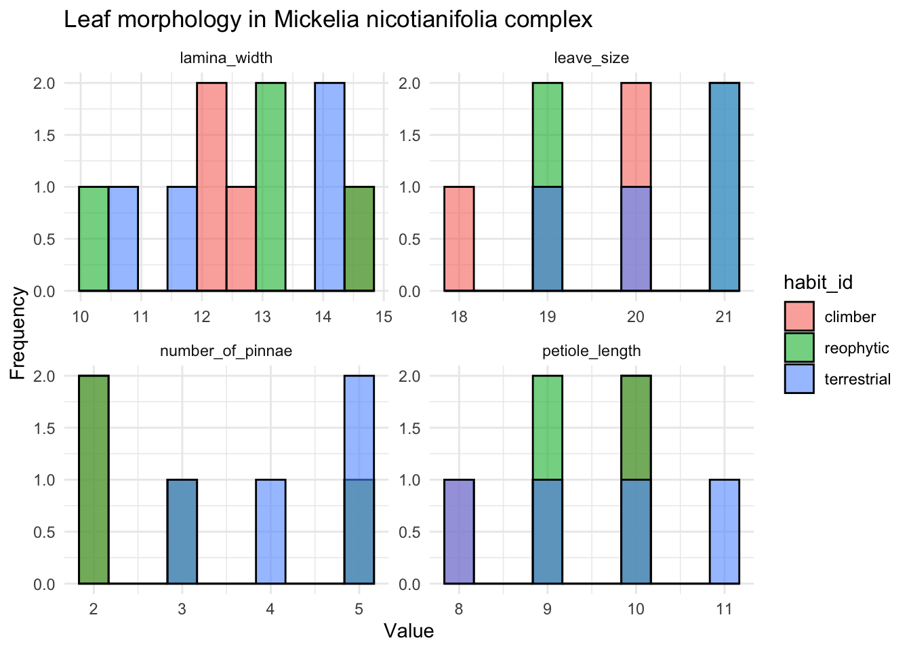
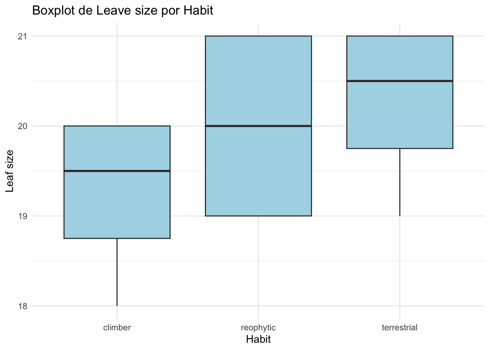

Homework 6
Fake data set
I am creating a fake data set based on the difference in leaf morphology of what is believed to be a fern species complex, this species has three growth forms (climbing, terrestrial, rheophytic). My hypothesis is that there are significant changes in leaf morphology and habit that may be different enough to separate the species, or simply confirm that they are the same species with broad adaptation to different environments. This will serve to correlate with molecular data, so let’s see ….
#create a fake data set
library(skimr)
library(tidyverse)## ── Attaching core tidyverse packages ─────────── tidyverse 2.0.0 ──
## ✔ dplyr 1.1.4 ✔ readr 2.1.5
## ✔ forcats 1.0.0 ✔ stringr 1.5.1
## ✔ ggplot2 3.5.1 ✔ tibble 3.2.1
## ✔ lubridate 1.9.4 ✔ tidyr 1.3.1
## ✔ purrr 1.0.2
## ── Conflicts ───────────────────────────── tidyverse_conflicts() ──
## ✖ dplyr::filter() masks stats::filter()
## ✖ dplyr::lag() masks stats::lag()
## ℹ Use the conflicted package (<http://conflicted.r-lib.org/>) to force all conflicts to become errors# 3 types of habit
habit_id <- c("terrestrial", "climber", "reophytic")
# morphological parameters to consider in leaf
leave_size <- c(round(rnorm(12, mean=20)))
print(leave_size)## [1] 23 18 18 20 23 20 19 20 23 19 19 20lamina_width <- c(runif(12, min = 10, max = 16))
print(lamina_width)## [1] 14.63683 11.25741 14.48874 13.51213 11.94668 12.25028 10.16162 12.90001
## [9] 15.82048 10.00237 10.63422 12.63966number_of_pinnae <- c(round(runif(12, min = 1, max = 5)))
print(number_of_pinnae)## [1] 2 5 3 4 4 4 1 2 3 5 4 1petiole_length <- c(round(rnorm(12, mean=9)))
print(petiole_length)## [1] 9 10 8 9 10 10 9 10 9 10 8 9# make the data frame
data.frame(habit_id,leave_size,petiole_length,lamina_width,number_of_pinnae) -> mickelia_spp
view(mickelia_spp)
skim(mickelia_spp)| Name | mickelia_spp |
| Number of rows | 12 |
| Number of columns | 5 |
| _______________________ | |
| Column type frequency: | |
| character | 1 |
| numeric | 4 |
| ________________________ | |
| Group variables | None |
Variable type: character
| skim_variable | n_missing | complete_rate | min | max | empty | n_unique | whitespace |
|---|---|---|---|---|---|---|---|
| habit_id | 0 | 1 | 7 | 11 | 0 | 3 | 0 |
Variable type: numeric
| skim_variable | n_missing | complete_rate | mean | sd | p0 | p25 | p50 | p75 | p100 | hist |
|---|---|---|---|---|---|---|---|---|---|---|
| leave_size | 0 | 1 | 20.17 | 1.85 | 18 | 19.0 | 20.00 | 20.75 | 23.00 | ▇▆▁▁▅ |
| petiole_length | 0 | 1 | 9.25 | 0.75 | 8 | 9.0 | 9.00 | 10.00 | 10.00 | ▃▁▇▁▇ |
| lamina_width | 0 | 1 | 12.52 | 1.85 | 10 | 11.1 | 12.44 | 13.76 | 15.82 | ▇▇▅▇▂ |
| number_of_pinnae | 0 | 1 | 3.17 | 1.40 | 1 | 2.0 | 3.50 | 4.00 | 5.00 | ▃▃▃▇▃ |
library(ggplot2)
mickelia_data <- mickelia_spp %>%
pivot_longer(cols = c(leave_size, petiole_length, lamina_width, number_of_pinnae),
names_to = "variable",
values_to = "value")ggplot(mickelia_data, aes(x = value, fill = habit_id)) +
geom_histogram(position = "identity", bins = 10, alpha = 0.6, color = "black") + # Histogramas
facet_wrap(~ variable, scales = "free") + # Facetas para cada variable
theme_minimal() +
labs(title = "Leaf morphology in Mickelia nicotianifolia complex",
x = "Value",
y = "Frequency")
Now write code to analyze the data (probably as an ANOVA or regression analysis, but possibly as a logistic regression or contingency table analysis. Write code to generate a useful graph of the data.
manova_result <- manova(cbind(leave_size, petiole_length, lamina_width, number_of_pinnae) ~ habit_id, data = mickelia_spp)
summary(manova_result)## Df Pillai approx F num Df den Df Pr(>F)
## habit_id 2 0.40777 0.44817 8 14 0.8722
## Residuals 9ggplot(mickelia_spp, aes(x = habit_id, y = leave_size)) +
geom_boxplot(fill = "lightblue") +
labs(title = "Boxplot de Leave size por Habit",
x = "Habit",
y = "Leaf size") +
theme_minimal()
Now, using a series of for loops, adjust the parameters of your data to explore how they might impact your results/analysis, and store the results of your for loops into an object so you can view it. For example, what happens if you were to start with a small sample size and then re-run your analysis? Would you still get a significant result? What if you were to increase that sample size by 5, or 10? How small can your sample size be before you detect a significant pattern (p < 0.05)? How small can the differences between the groups be (the “effect size”) for you to still detect a significant pattern?
results <- data.frame(sample_size = integer(),
p_valor = numeric(),
efecto_tamano = numeric())
for (sample_size in seq(5, 30, by = 5)) {
# creat data
set.seed(123)
habit_id <- rep(c("terrestrial", "climber", "reophytic"), length.out = sample_size)
leave_size <- rnorm(sample_size, mean = 20)
# creat a data frame
mickelia_spp <- data.frame(habit_id, leave_size)
# ANOVA
anova_result <- aov(leave_size ~ habit_id, data = mickelia_spp)
# save p-valor
p_valor <- summary(anova_result)[[1]]$`Pr(>F)`[1] # Extraer el p-valor
size_efect <- abs(mean(leave_size[habit_id == "climber"]) - mean(leave_size[habit_id == "terrestrial"]))
results <- rbind(results, data.frame(sample_size, p_valor, size_efect))
}
print(results)## sample_size p_valor size_efect
## 1 5 0.1002187 0.194538750
## 2 10 0.2232001 0.336638742
## 3 15 0.6079787 0.008551019
## 4 20 0.8016260 0.345779268
## 5 25 0.7267583 0.303606847
## 6 30 0.4128762 0.558164851str(results)## 'data.frame': 6 obs. of 3 variables:
## $ sample_size: num 5 10 15 20 25 30
## $ p_valor : num 0.1 0.223 0.608 0.802 0.727 ...
## $ size_efect : num 0.19454 0.33664 0.00855 0.34578 0.30361 ...head(results)## sample_size p_valor size_efect
## 1 5 0.1002187 0.194538750
## 2 10 0.2232001 0.336638742
## 3 15 0.6079787 0.008551019
## 4 20 0.8016260 0.345779268
## 5 25 0.7267583 0.303606847
## 6 30 0.4128762 0.558164851